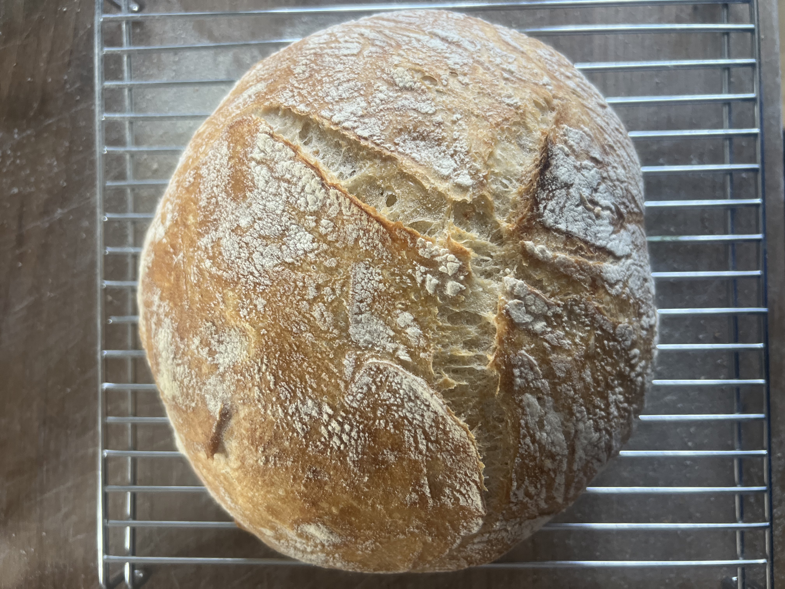

No Knead Bread
Summarized from NYT "No Knead Bread" original and updated versions.

The only bread recipe I make consistantly. Requires little skill, time and ingredients.
The result is an excellent loaf! I most frequently make this and have toast for the
week ahead. Any unfinished bread makes excellent french toast!
The original recipe was published by Jim Lahey and later adapted to an improved updated version.
Both recipes are excellent as is, however, this adapted version combines strategies from both in the way that works best for me.
The main distinction from the updated recipe comes in the baking process which relies on a cast iron dutch oven like its predecessor.
Ingredients
- 400 grams bread flour
- 2 gram instant yeast
- 8 grams kosher salt
- 280 grams of warm water
- 1/8 teaspoon white vinegar or lemon juice
- extra flour for dusting
Steps
- Mix dry in large bowl until mostly homogenous, and wet seperately in another bowl.
- Add wet to dry aand form one hand into a stiff claw stirring until no dry flour remains (dough should form a sticky shaggy ball). This process should take 30 to 45 seconds.
- Seal the bowl, either with a cutting board or another bowl and ensure a good seal. Let it rest at least 12 and up to 18 hours at room temp.
- When the dough is done resting, gently tip the dough ball onto a dusted surface. Reach under one side and fold it over itself into the center. Do this 3 more times until each side of the dough has been folded on top. Flip the dough over so the taut side is facing up, use the side of your hands to tuck the dough tightly.
- Place the dough ball smooth side up into a towel lined bowl dusted with extra bread flower. Cover the bowl and allow it to rise, generally takes around 2 hours or when the dough holds shape when you poke it.
- Roughly 30 minutes before baking, preheat the oven to 500 degrees and place a cast iron dutch oven inside. When the dough is ready place it in the hot dutch oven and return it to the oven. Reduce the heat to 450 and bake for 25 minutes, check on the loaf and remove the lid letting the loaf cook longer as dark as you like. Fubally remove the bread and let it cool completely before cutting open.
Home